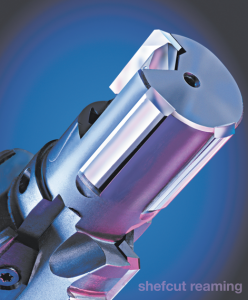
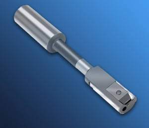

Shefcut
Boring & Reaming
Tools
Accurate Size
Fine Finish
Superior Hole
Geometry

Shefcut Reaming Product Selection and Operation Guide
 Cogsdill Shefcut Reaming Video
Cogsdill Shefcut Reaming VideoShefcut® precision reamers and boring tools are designed to produce accurately sized, extremely straight and round bores with fine surface finishes. Multiple guide pads rigidly support a single, replaceable cutting blade for exceptional stability and alignment. Size control, surface finish quality, and hole geometry are superior, compared to results from conventional reamers and boring tools.
{kind=link}
Each tool is designed for a specific cut diameter. Standard and custom tool designs are offered. Also available from Cogsdill: tool holders designed to complement and enhance the performance of Shefcut tools, and Shefcut setting fixtures for fast and accurate tool settings.
The Shefcut® design concept
{kind=link}
Conventional multi-fluted reamers are guided by their cutting edges. The Shefcut design separates the cutting, guiding, and supporting functions of the tool for maximum advantage.
Because the cutting blade is independent of the tool body, it can be micro-adjusted over a limited range and pre-set to a cut diameter that the tool will then produce with consistent accuracy. Worn cutting blades can be replaced quickly and easily.
Pads that are independent of the cutting blade optimize the guiding and supporting functions of the tool. While the tool is in operation, cutting forces are opposed by pad reaction forces in perfect balance, providing rigid support for the blade edge. Pads can be tailored to suit the application; e.g., for interrupted cuts, piloted operations, etc.
Fine surface finishes
Shefcut produces lower surface finishes than conventional cutting tools. Surface finishes as fine as 0.1 micrometers (4 microinches) Ra or better are attainable in some materials.
The face of the Shefcut blade is highly polished to reduce friction between chip and blade, which in turn reduces the tendency toward edge build-up. The Shefcut blade has a very sharp edge, and the cutting geometry reduces chip thickness. These blade design advantages, along with the rigid support provided to the blade by the guide pads, enable the user to achieve excellent surface finishes.
Accurate sizing and superior bore geometry
- FIGURE 1
Typical lobed hole geometry generated by multi-fluted reamer. - FIGURE 2
Typical hole geometry generated by Shefcut tool: no lobes, only surface finish irregularities.
The Shefcut tool produces hole geometry that is superior to the hole geometry produced by conventional reamers. Since multifluted reamers are guided by the cutting edges, they inevitably generate a lobed bore geometry (refer to figure 1). The Shefcut design produces better hole geometry due to rigid support of the cutting blade by the guide pads (see figure 2).
Bore tolerances, including straightness and roundness, can usually be held within 5 microns (.0002 inch) using Shefcut tools on typical shop equipment, provided that reasonable care is taken.
Accurate and consistent performance
Advances in machine tool spindle speeds and accuracy, along with improved tool materials (such as PCD) and more accurate tool-to-spindle connections, have revolutionized manufacturing processes. Today's higher performance machine tools demand higher performance tooling. Shefcut ensures maximum efficiency from high-speed, highly accurate machines. The tools can be pre-set to achieve the required size and finish with minimal part-to-part variation.
Shefcut World Reamer® series
{kind=link}
The Shefcut World Reamer® program includes tools of a standard design suited for precision reaming applications.
The World Reamer features a rigid blade-clamping system offering the greatest possible amount of chip clearance for maximum tool performance.
The tools are available for popular hole sizes, both metric and inch. They are offered in two lengths, with through-hole or blind-bore internal coolant, or external flood coolant. Tools with cermet pads are available on request for ferrous material applications.
World Reamers are available on a quick delivery basis. Blanks are stocked and tools are built to order to suit a specific cut diameter.
The Shefcut® design concept can be adapted to a wide variety of standard and special tool configurations to suit your application.